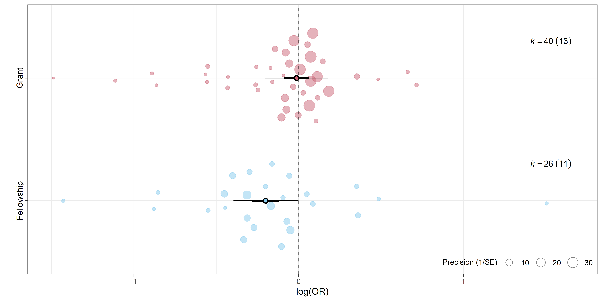

Meta-análisis en R
Clase 2: Control de la heterogeneidad
Análisis de moderadores
Permite identificar posibles fuentes de heterogeneidad entre los estudios incluidos en un meta-análisis.
-
Hay dos tipos principales de análisis de moderadores:
Análisis de subgrupos: evalúa el efecto de variables categóricas (país, sexo, tipo de intervención, etc.).
Metarregresión: evalúa el efecto de variables numéricas (año de publicación, edad promedio, etc.).
Las variables moderadoras deben definirse desde la etapa de extracción de datos en la revisión sistemática.
Análisis de subgrupos
Permite plantear hipótesis estadísticas sobre posibles fuentes de heterogeneidad.
Asume que los estudios no provienen de una población única, sino de distintos subgrupos poblacionales, cada uno con su efecto verdadero.
-
El análisis consta de dos etapas:
- Estimación del efecto dentro de cada subgrupo.
- Prueba estadística para evaluar diferencias entre subgrupos.
Implementación en R
Para realizar el análisis de subgrupos con el paquete
meta, se utiliza el argumentosubgroup = var, dondevares una variable categórica presente en el conjunto de datos.Esto ajusta internamente un modelo de meta-análisis para cada nivel de la variable categórica, con sus estimadores de efecto (\(95\%~IC\)) y heterogeneidad, además del estimador global (\(95\%~IC\)) y medidas de heterogeneidad.
Ejemplo
A partir del dataset
dat.crisafulli2020, queremos evaluar si el país de origen influye en el estimador global.-
Cargamos paquetes necesarios:
-
Cargamos los datos:
-
Generamos una tabla de frecuencias usando el paquete
janitor:
Italia concentra el 23% de los estudios; el resto de los países tiene baja frecuencia.
Para realizar comparaciones válidas entre subgrupos, se recomienda tener al menos 5 estudios por categoría.
-
Creamos una variable dicotómica para
country:
-
Ajustamos un modelo con
pais_catcomo moderador:
Salida del modelo
Number of studies: k = 26
Number of observations: o = 6831388
Number of events: e = 1545
proportion 95%-CI
Common effect model 0.0002 [0.0002; 0.0002]
Random effects model 0.0002 [0.0002; 0.0002]
Quantifying heterogeneity (with 95%-CIs):
tau^2 = 0.0126; tau = 0.1121; I^2 = 33.2% [0.0%; 58.6%]; H = 1.22 [1.00; 1.55]
Test of heterogeneity:
Q d.f. p-value
Wald 37.41 25 0.0527
LRT 39.01 25 0.0368
Results for subgroups (common effect model):
k proportion 95%-CI Q I^2
pais_cat = Otro 20 0.0002 [0.0002; 0.0002] 26.02 27.0%
pais_cat = Italia 6 0.0002 [0.0002; 0.0003] 5.97 16.2%
Test for subgroup differences (common effect model):
Q d.f. p-value
Between groups 6.03 1 0.0141
Results for subgroups (random effects model):
k proportion 95%-CI tau^2 tau
pais_cat = Otro 20 0.0002 [0.0002; 0.0002] 0.0122 0.1104
pais_cat = Italia 6 0.0003 [0.0002; 0.0003] 0.0033 0.0577
Test for subgroup differences (random effects model):
Q d.f. p-value
Between groups 6.22 1 0.0126
Details of meta-analysis methods:
- Random intercept logistic regression model
- Maximum-likelihood estimator for tau^2
- Calculation of I^2 based on Q
- Logit transformationN° de estudios (\(k\)), eventos (\(e\)) y total de observaciones (\(o\)).
Estimador de efecto global (\(95\%~IC\)), intervalo de predicción e indicadores de heterogeneidad.
Estimadores de efectos por subgrupo (\(95\%~IC\)) y heterogeneidad dentro del grupo.
Test de significancia para diferencias entre subgrupos.
-
Podemos acceder al \(p\)-valor de la prueba usando:
Esto se interpreta como: el
mod1(Italia vs. otros países) muestra diferencias estadísticamente significativas entre subgrupos.
Forest plot
-
Generamos el gráfico para
mod1usandolayout = "subgroup":
Observaciones
-
El análisis de subgrupos es un híbrido entre los modelos de efectos fijos y aleatorios:
- Como en los modelos de efectos aleatorios, cada categoría tiene su propio efecto verdadero.
- Pero las categorías (por ejemplo, países, sexos, regiones) no se consideran aleatorias, sino fijas.
Por esta razón también se le conoce como modelo de efectos fijos plurales o modelo de efectos mixtos.
Limitaciones
- Si la heterogeneidad es alta, los \(95\%~IC\) ser amplios y superponerse, aún cuando las diferencias sean estadísticamente significativas.
- Baja potencia estadística: el tamaño muestral por subgrupo es menor que en el análisis global.
- La ausencia de significancia no implica equivalencia entre los subgrupos.
- No permite evaluar causalidad: solo es adecuado para estudios observacionales.
Metarregresión
Utiliza el modelo de efectos mixtos para predecir el estimador de efecto global en base a una o más variables independientes.
Para predictores categóricos es equivalente al análisis de subgrupos.
Para predictores continuos ajusta una recta de regresión que intenta minimizar la diferencia entre el estimador de efecto predicho y el verdadero estimador de efecto.
Implementación en R
-
Comenzamos ajustando un modelo de efectos aleatorios sin subgrupos:
Predictor categórico
Cuando el predictor es categórico, como
pais_cat, la metarregresión es análoga al análisis de subgrupos.-
Como en las regresiones se compara cada nivel con una categoría de referencia, obtenemos la comparación para cada nivel omitiendo el intercepto (como en un ANOVA):
-
Los coeficientes se muestran en escala logarítmica, exponenciamos para obtener las proporciones:
-
Los valores exponenciados son similares a los obtenidos en el análisis de subgrupos:
Number of studies: k = 26 Number of observations: o = 6831388 Number of events: e = 1545 proportion 95%-CI Common effect model 0.0002 [0.0002; 0.0002] Random effects model 0.0002 [0.0002; 0.0002] Quantifying heterogeneity (with 95%-CIs): tau^2 = 0.0126; tau = 0.1121; I^2 = 33.2% [0.0%; 58.6%]; H = 1.22 [1.00; 1.55] Test of heterogeneity: Q d.f. p-value Wald 37.41 25 0.0527 LRT 39.01 25 0.0368 Results for subgroups (common effect model): k proportion 95%-CI Q I^2 pais_cat = Otro 20 0.0002 [0.0002; 0.0002] 26.02 27.0% pais_cat = Italia 6 0.0002 [0.0002; 0.0003] 5.97 16.2% Test for subgroup differences (common effect model): Q d.f. p-value Between groups 6.03 1 0.0141 Results for subgroups (random effects model): k proportion 95%-CI tau^2 tau pais_cat = Otro 20 0.0002 [0.0002; 0.0002] 0.0122 0.1104 pais_cat = Italia 6 0.0003 [0.0002; 0.0003] 0.0033 0.0577 Test for subgroup differences (random effects model): Q d.f. p-value Between groups 6.22 1 0.0126 Details of meta-analysis methods: - Random intercept logistic regression model - Maximum-likelihood estimator for tau^2 - Calculation of I^2 based on Q - Logit transformation
Predictor numérico
Ajustaremos un modelo de metarregresión usando
pubyearcomo predictor.-
En este caso, como la variable independiente es numérica, nos interesa mantener el intercepto:
-
Obtenemos la siguiente salida:
Mixed-Effects Model (k = 26; tau^2 estimator: ML) logLik deviance AIC BIC AICc -75.9315 14.5514 157.8629 161.6372 158.9538 tau^2 (estimated amount of residual heterogeneity): 0.0067 tau (square root of estimated tau^2 value): 0.0816 I^2 (residual heterogeneity / unaccounted variability): 26.61% H^2 (unaccounted variability / sampling variability): 1.36 Tests for Residual Heterogeneity: Wld(df = 24) = 28.8391, p-val = 0.2262 LRT(df = 24) = 30.5162, p-val = 0.1682 Test of Moderators (coefficient 2): QM(df = 1) = 7.1208, p-val = 0.0076 Model Results: estimate se zval pval ci.lb ci.ub intrcpt 8.5560 6.3550 1.3463 0.1782 -3.8996 21.0116 pubyear -0.0085 0.0032 -2.6685 0.0076 -0.0148 -0.0023 ** --- Signif. codes: 0 '***' 0.001 '**' 0.01 '*' 0.05 '.' 0.1 ' ' 1
Mixed-Effects Model:muestra como cambia la heterogeneidad al añadir el moderador continuo y (según el estimador) el \(R^2\) del modelo.Model resultspresenta los coeficientes del modelo para el intercepto y el moderador, con su significancia estadística y \(95\%~IC\).
Bubble plots
- Representación gráfica de la relación entre el estimador de efecto y un moderador continuo:
- El eje \(X\) muestra la variable moderadora, mientras que el eje \(Y\) muestra el estimador de efecto.
- Se incluye una recta de regresión que resume la tendencia del efecto en función del moderador.
- Cada burbuja representa un estudio y su tamaño suele ser proporcional al peso del estudio.
Metarregresión múltiple
-
Modelo aditivo: asume que cada moderador tiene un efecto independiente sobre el estimador de efecto.
-
Modelo multiplicativo: permite modelar interacciones, es decir, que el efecto de un moderador cambie según el nivel de otro:
Limitaciones
- El modelo multiplicativo permite que el efecto de un moderador dependa del nivel del otro, pero:
Aumenta la complejidad y el riesgo de sobreajuste.
Requiere mayor número de estudios por combinación de niveles.
Puede introducir colinealidad entre variables.
- Si el término de interacción no es significativo, usar modelo aditivo.
Sesgo de publicación
- Se refiere a la mayor probabilidad de publicar estudios con:
Resultados positivos.
Significancia estadística.
Efectos de gran magnitud.
- Esto puede distorsionar/sobreestimar los resultados de un meta-análisis.
- Existen diversas herramientas para detectarlo: funnel plots, test de Egger, test de Begg, trim-and-fill, entre otros.
Funnel plots
Presenta en el eje \(Y\) el tamaño muestral o la precisión de los estudios, y en el eje \(X\) el estimador de efecto para cada estudio.
Se espera una distribución simétrica que forme un patrón similar a un embudo.
En R se obtienen con la función
funnel()
Test de Egger
Evalúa la simetría del funnel plot mediante una regresión lineal entre el estimador de efecto y su error estándar.
-
No permite evaluar sesgo en modelos multinivel.
Linear regression test of funnel plot asymmetry Test result: t = -1.45, df = 24, p-value = 0.1603 Bias estimate: -0.6649 (SE = 0.4589) Details: - multiplicative residual heterogeneity variance (tau^2 = 1.4335) - predictor: standard error - weight: inverse variance - reference: Egger et al. (1997), BMJ
Test de Begg
Utiliza la correlación de rangos para evaluar la relación entre el tamaño del efecto y el error estándar.
-
No permite evaluar sesgo en modelos multinivel.
Trim-and-fill
-
Estima el número de estudios faltantes debido al sesgo de publicación y ajusta la media global en consecuencia generando estudios hipotéticos.
Number of studies: k = 32 (with 6 added studies) proportion 95%-CI Random effects model 0.0002 [0.0002; 0.0003] Prediction interval [0.0002; 0.0003] Quantifying heterogeneity (with 95%-CIs): tau^2 = 0.0181; tau = 0.1344; I^2 = 42.4% [12.2%; 62.2%]; H = 1.32 [1.07; 1.63] Test of heterogeneity: Q d.f. p-value 53.82 31 0.0067 Details of meta-analysis methods: - Inverse variance method - Maximum-likelihood estimator for tau^2 - Calculation of I^2 based on Q - Prediction interval based on t-distribution (df = 31) - Trim-and-fill method to adjust for funnel plot asymmetry (L-estimator) - Logit transformation
Modelos multinivel
Cuando un mismo estudio aporta múltiples estimadores de efecto (distintos moderadores), se necesita modelar la falta de independencia entre los mismos.
Si bien todos los modelos de meta-análisis pueden considerarse como multinivel, este término refiere específicamente a aquellos que incorporan una tercera capa de variabilidad llamada heterogeneidad intraestudio.
Implementación en R
-
Usaremos el dataset
dat.bornmann2007sobre sesgo de género en adjudicación de becas y subsidios de investigación: Podemos ajustar modelos multinivel con
metaañadiendo el argumentocluster.
-
Como cada estudio aporta más de una observación, usamos
studycomo clúster y el número de fila (id) como identificador único:
Number of studies: n = 21
Number of estimates: k = 66
Number of observations: o = 353725 (o.e = 74060, o.c = 279665)
Number of events: e = 109357
OR 95%-CI z p-value
Random effects model 0.9039 [0.8329; 0.9810] -2.42 0.0155
Quantifying heterogeneity (with 95%-CIs):
tau^2.1 = 0.0161 [0.0040; 0.0555]; tau.1 = 0.1268 [0.0630; 0.2357] (between cluster)
tau^2.2 = 0.0038 [0.0008; 0.0146]; tau.2 = 0.0613 [0.0285; 0.1208] (within cluster)
I^2 = 70.6% [62.4%; 77.1%]; H = 1.85 [1.63; 2.09]
Test of heterogeneity:
Q d.f. p-value
221.28 65 < 0.0001
Results for subgroups (random effects model):
k OR 95%-CI tau^2 tau Q I^2
type = Fellowship 26 0.8320 [0.7602; 0.9105] 0.0213 0.1460 59.56 58.0%
type = Grant 40 0.9850 [0.9094; 1.0669] 0.0157 0.1255 73.93 47.2%
Details of meta-analysis methods:
- Inverse variance method (three-level model)
- Restricted maximum-likelihood estimator for tau^2
- Profile-Likelihood method for confidence interval of tau^2 and tau
- Calculation of I^2 based on Qtau^2.1: es la heterogeneidad entre clústers (estudios).tau^2.2: es la heterogeneidad intra-clúster (estudio).
Para obtener valores de \(I^2\), bondad de ajuste y/o analizar sesgo de publicación, debemos ajustar el modelo multinivel usando
metafor.-
Esto a su vez nos permite usar herramientas para gráficos avanzados como
metavizyorchaRd:
-
Primero calculamos los estimadores de efecto individuales con
escalc(): -
Ajustamos el modelo con
rma.mv():
-
Podemos ver la tabla de coeficientes (en log-OR) con la función
mod_results()deorchaRd: -
La bondad de ajuste (\(R^2\)) se obtiene con la función
r2_ml():
-
Accedemos a los \(I^2\) intra e interclúster con
i2_ml()deorchaRd:
-
Podemos graficar el aporte de cada componente de varianza usando
dmetar:
-
Para evaluar sesgo de publicación quitamos los moderadores del modelo:
-
Evaluamos sesgo de publicación (solo test de Begg):
-
Podemos generar funnel plots visualmente atractivos con
metaviz:
Orchard plot
Caterpillar plot
Análisis de sensibilidad
Muchas gracias!!!